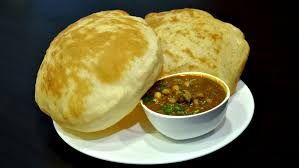

Chole Bhature
North India includes the mountains of Kashmir , the smell of street food in delhi,
farmlands of Haryana and Punjab and Holy Places in Uttarakhand and
Uttarpradesh.

Chole bhature (also known as channa bhatura) is a North Indian dish pairing chickpea curry with bhatura, a deep-fried flatbread. A common street food, chole bhature is often eaten as a breakfast dish. It is associated with Punjabi cuisine, though various views exist on the dish's origin. It is also popular in Delhi, where it was introduced after the partition of India. By the 2010s, it had become a popular fast food across India. The Indo-Trinidadian dish doubles is controversially said to be an adaptation of chole bhature.
Ingredients
- Chickpeas: 1 cup, soaked overnight
- Onions/Tomatoes: 1 large onion (diced), 3 medium tomatoes (pureed)
- 1 tsp ginger-garlic paste, 1 tbsp cumin seeds
- 1 tbsp chana masala powder, 1/2 tsp turmeric, 1 tbsp coriander powder, 1/2 tsp garam masala, 1 tsp chili powder
- Tea Bag/Leaves: 1 bag (for color)
- Garnish: Cilantro, lemon wedges
- Flour: 2 cups maida (all-purpose flour)
- 2 tbsp sooji (semolina) and 1/2 cup curd (yogurt)
- 1/4 tsp baking soda, 1/2 tsp baking powder, 1 tsp sugar
Recipe
- Prep & Cook Chole: Pressure cook soaked chickpeas with tea bag, salt, and water (approx. 20 mins) until tender. In a pan, heat oil, add cumin, sauté onions, ginger-garlic paste, tomatoes, and spices. Add cooked chickpeas (discard tea bag), simmer until thick
- Make Bhature Dough: Combine maida, sooji, curd, baking powder, baking soda, sugar, and oil. Add water as needed, knead to a soft, smooth dough, cover with a damp cloth, and rest for 2-3 hours.
- Fry Bhature: Divide dough into balls, roll into thick ovals, and deep-fry in hot oil until puffed, turning once.
Back to Homepage